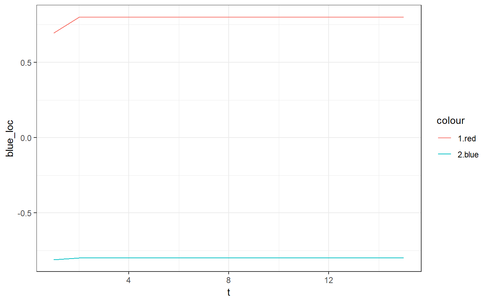
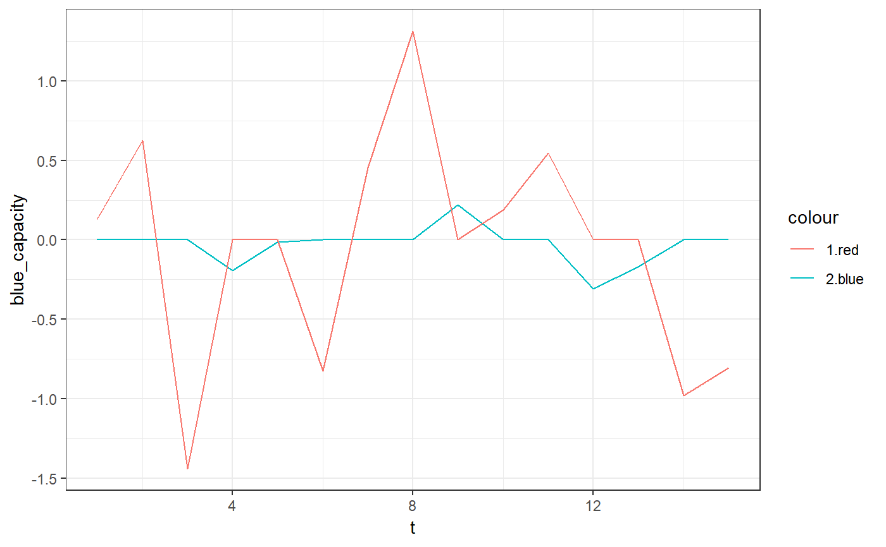

updateparty.RdSet ideologies and capacity of parties (i.e., blue and red) running in election.
updateparty(party, incumbent, loc_noise = 0, capacity_noise = 0.7, blue_loc_direction = 0, red_loc_direction = 0, blue_capacity_direction = 0, red_capacity_direction = 0, update_type = "oneshot", blue_loc_seed = NULL, red_loc_seed = NULL, blue_capacity_seed = NULL, red_capacity_seed = NULL)
| party | The lists generated initially by |
|---|---|
| incumbent | Incumbent party in the current election. Either |
| loc_noise | Random noise in updating locations of party ideologies. |
| capacity_noise | Random noise in updating party capacity. |
| blue_loc_direction | Direction and expected quantity of the movement in blue party ideology. |
| red_loc_direction | Direction and expected quantity of the movement in red party ideology. |
| blue_capacity_direction | Direction and expected quantity of the movement in blue party capacity. |
| red_capacity_direction | Direction and expected quantity of the movement in red party capacity. |
| update_type | The type of updating procedure.
If |
| blue_loc_seed | Random number seed to draw blue party ideology. |
| red_loc_seed | Random number seed to draw red party ideology. |
| blue_capacity_seed | Random number seed to draw blue party capacity. |
| red_capacity_seed | Random number seed to draw red party capacity. |
The updated list of ideology parameters:
loc ideology locations of two parties.
capacity capacity levels of two parties.
tracker Tracker of the history of ideogoloy and capacity.
require(ggplot2)#>par <- setparty() for (t in 1:14) { incumbent <- sample(c("red","blue"),1) par <- updateparty(par,incumbent, 0, 0.7) } # party ggplot(par$tracker,aes(x=t)) + geom_line(aes(y=blue_loc,color="2.blue")) + geom_line(aes(y=red_loc,color="1.red")) + theme_bw()# capacity ggplot(par$tracker,aes(x=t)) + geom_line(aes(y=blue_capacity,color="2.blue")) + geom_line(aes(y=red_capacity,color="1.red")) + theme_bw()